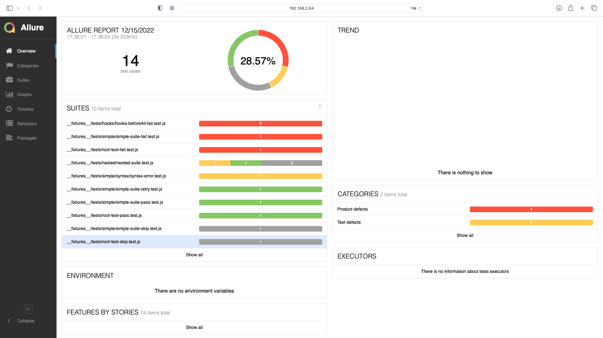

jest-allure2-reporter



Installation
Before you start, make sure you have Allure CLI installed.
Your project should have jest installed. The minimum supported version is 27.x.
Run in your project:
npm install --save-dev jest-allure2-reporter
Edit your jest.config.js:
module.exports = {
// ...
reporters: [
'default',
+ 'jest-allure2-reporter',
],
};
Customization
By default, the reporter will write the results to allure-results directory. You can change this by setting the resultsDir option:
module.exports = {
// ...
reporters: [
'default',
[
'jest-allure2-reporter',
+ { resultsDir: 'my-results-dir' },
],
],
};
Below is a list of all the available options:
| Property | Type | Default | Description |
|---|---|---|---|
errorsAsFailedAssertions |
boolean |
false |
Treat thrown errors as failed assertions. By default, the reporter distinguishes between failed assertions and thrown errors. The former are reported as FAILED tests, the latter as BROKEN tests. |
getEnvironmentInfo |
function or boolean |
true |
Can be customized with an async function to extract environment information from the test environment. By default, the environment information is extracted from the process.env object. Use false to disable environment information. |
overwriteResultsDir |
boolean |
true |
Whether the reporter should delete the results directory before running tests. |
packageName |
string |
require('./package.json').name |
Add an extra label to each test case with the package name. Helpful when running tests from multiple packages in a monorepo. |
resultsDir |
string |
<rootDir>/allure-results |
Path to the directory where the report will be generated. |
Usage
Run your tests with jest as usual and then view the results:
allure serve
If you use a custom resultsDir, you should specify it in the allure serve command, e.g.:
allure serve your-results-dir # if you use a custom `resultsDir`
If you want to generate a static report, e.g., for CI, run:
allure generate
For more information, see the Allure CLI documentation.
Contributing
See CONTRIBUTING.md.